科技日报 | 2026-10-28
2026 年 10 月 28 日 周三 · GitHub Trending + Hacker News
今天的关键词：美国秘密监控裁决曝光、Ghostty 1.4 发布、AI 承诺减负却适得其反
一、GitHub Trending 今日热门项目 TOP 10
1. Nutlope/hallmark —— 反 AI 审美泛滥的设计规范
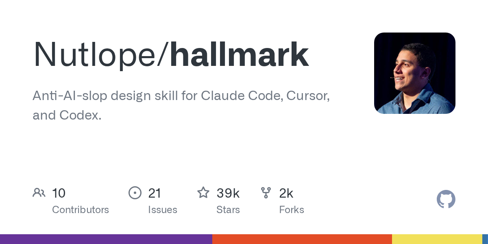
🏷️ 基本信息
- 语言：CSS
- 总 Star：36,350
- 今日新增：+2,244
- 地址：https://github.com/Nutlope/hallmark
📖 项目介绍
面向 AI 编程工具的"反 AI 审美"设计技能——让 AI 生成的 UI 不再千篇一律。
✨ 技术亮点
- 定义"好设计"的负面清单；
- 以 Skill 形式嵌入 Agent 工作流；
- 连续霸榜说明审美痛点普遍存在。
🎯 适合场景
AI 辅助前端开发。
📚 学习价值
"反 AI 审美"正在成为新的设计能力。
2. TauricResearch/TradingAgents —— 多 Agent 金融交易框架
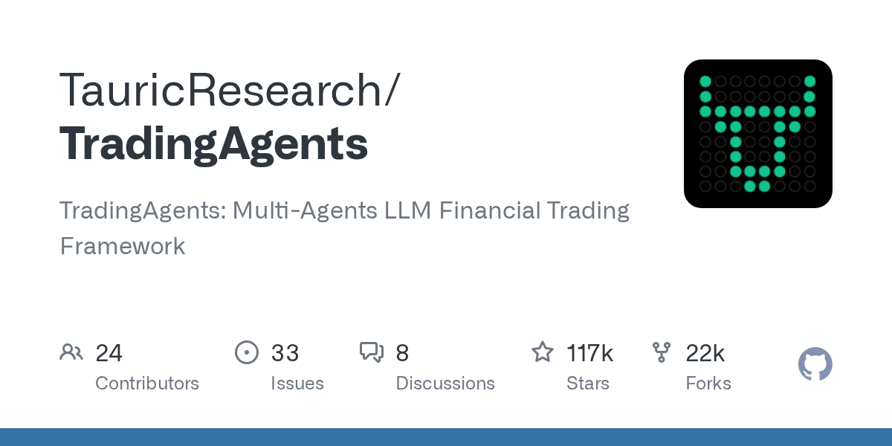
🏷️ 基本信息
- 语言：Python
- 总 Star：116,112
- 今日新增：+1,395
- 地址：https://github.com/TauricResearch/TradingAgents
📖 项目介绍
多 Agent LLM 金融交易框架：多个 AI Agent 分别扮演分析师、交易员、风控经理。
✨ 技术亮点
- 角色分工明确；
- 基于 LLM 的推理能力；
- 11 万+ Star。
🎯 适合场景
量化交易研究。
📚 学习价值
Multi-Agent 最成熟的落地场景之一。
3. JetBrains/thinkrail —— Vibe Coding IDE
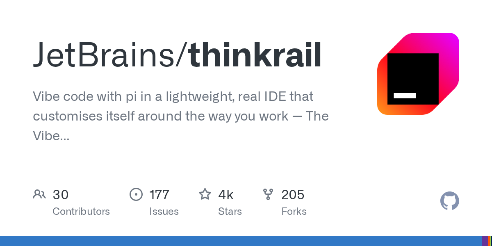
🏷️ 基本信息
- 语言：TypeScript
- 总 Star：2,909
- 今日新增：+1,173
- 地址：https://github.com/JetBrains/thinkrail
📖 项目介绍
JetBrains 推出的轻量级 IDE，主打 Vibe Coding。
✨ 技术亮点
- JetBrains 出品，继承 IntelliJ 系的代码分析能力；
- 用对话代替键盘；
- 自我定制的 IDE。
🎯 适合场景
新手开发者、偏好自然语言交互的编程者。
📚 学习价值
AI 编程正在成为主流开发方式。
4. makecindy/cindy —— 开箱即用的开源 AI Agent
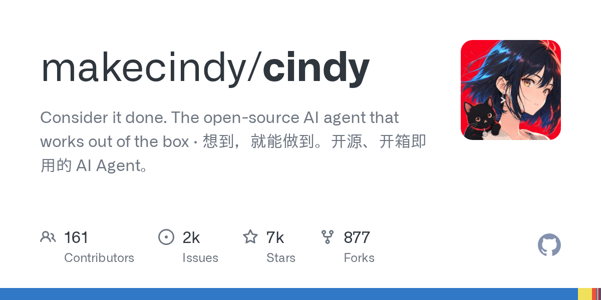
🏷️ 基本信息
- 语言：TypeScript
- 总 Star：6,488
- 今日新增：+1,296
- 地址：https://github.com/makecindy/cindy
📖 项目介绍
开源 AI Agent 平台，开箱即用，无需复杂配置即可部署智能助手。
✨ 技术亮点
- 零配置启动；
- 开源社区驱动；
- 支持多种 Agent 能力扩展。
🎯 适合场景
快速搭建 AI 助手原型。
📚 学习价值
Agent 平台正在从"需要调参"走向"开箱即用"。
5. affaan-m/ECC —— Agent 性能优化系统
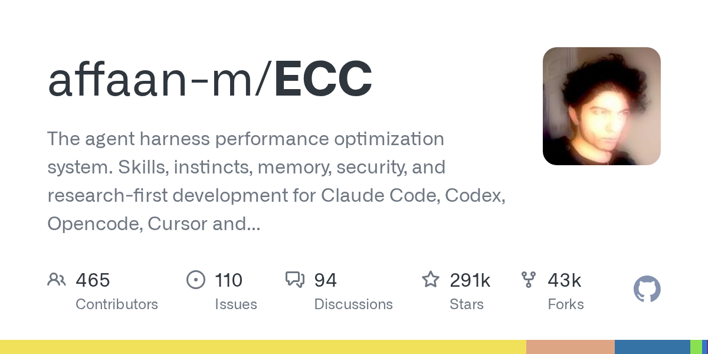
🏷️ 基本信息
- 语言：JavaScript
- 总 Star：289,853
- 今日新增：+896
- 地址：https://github.com/affaan-m/ECC
📖 项目介绍
Agent harness 性能优化系统，帮助 AI 编程 Agent 更高效地执行任务。
✨ 技术亮点
- 28 万+ Star，现象级项目；
- 针对 Agent 执行链路做性能分析；
- 优化 Token 使用和工具调用效率。
🎯 适合场景
Agent 开发者、性能调优工程师。
📚 学习价值
Agent 的性能优化正在成为独立的技术方向。
6. pbakaus/impeccable —— 让 AI 设计输出达到专业水准
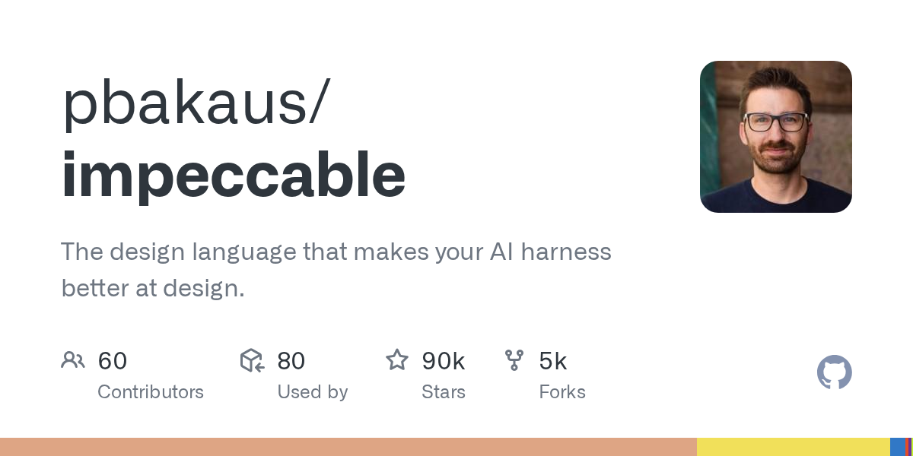
🏷️ 基本信息
- 语言：Rust
- 总 Star：89,225
- 今日新增：+1,506
- 地址：https://github.com/pbakaus/impeccable
📖 项目介绍
一套设计语言系统，让 AI 编程工具生成的 UI/UX 达到专业水准。
✨ 技术亮点
- Rust 编写，性能优异；
- 定义 AI 辅助设计的原则和组件规范。
🎯 适合场景
Vibe coding 场景。
📚 学习价值
AI 编程的下一个竞争维度是设计质量。
7. NVIDIA/SkillSpector —— AI Agent 技能安全扫描器
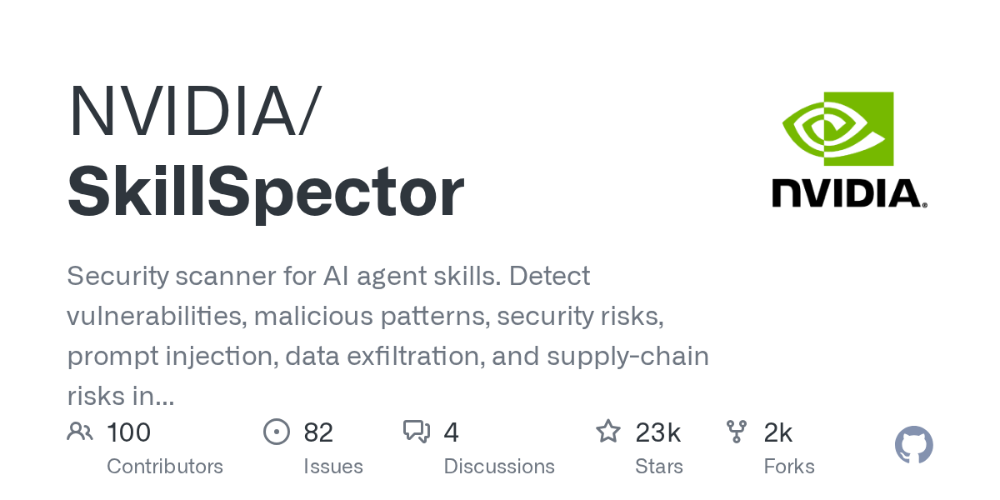
🏷️ 基本信息
- 语言：Python
- 总 Star：22,199
- 今日新增：**+214**
- 地址：https://github.com/NVIDIA/SkillSpector
📖 项目介绍
NVIDIA 开源的 AI Agent 技能安全扫描工具，检测 Agent 技能中的安全漏洞。
✨ 技术亮点
- NVIDIA 官方出品；
- 自动化扫描 Agent Skill 的安全风险；
- 覆盖注入、权限越界等常见威胁。
🎯 适合场景
Agent 安全审计、企业级 AI 部署。
📚 学习价值
Agent 安全从"事后补救"走向"事前扫描"。
8. pollen-robotics/microduck —— Rust 双足小鸭机器人
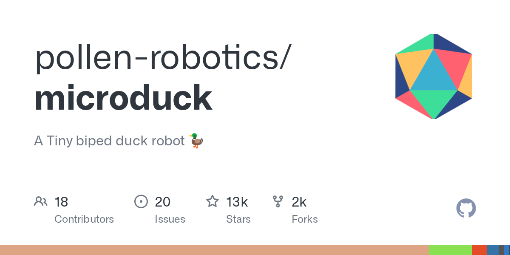
🏷️ 基本信息
- 语言：Rust
- 总 Star：12,417
- 今日新增：+843
- 地址：https://github.com/pollen-robotics/microduck
📖 项目介绍
微型双足鸭子机器人，Rust 实现。
✨ 技术亮点
- 双足行走平衡算法；
- Rust 保证内存安全和实时控制。
🎯 适合场景
机器人爱好者、Rust 嵌入式开发者。
📚 学习价值
开源正在降低机器人开发门槛。
9. nightly-labs/openbot —— 本地优先的 AI 桌面工作区
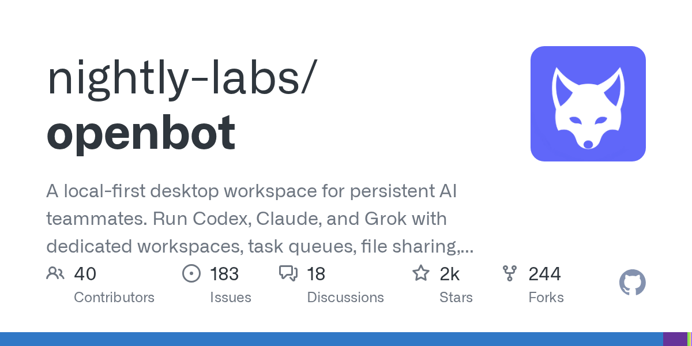
🏷️ 基本信息
- 语言：TypeScript
- 总 Star：1,480
- 今日新增：+176
- 地址：https://github.com/nightly-labs/openbot
📖 项目介绍
本地优先的桌面工作区，为持久化 AI 队友提供运行环境。
✨ 技术亮点
- Local-first 架构，数据不离开本机；
- 支持多个 AI Agent 持久运行；
- 桌面端原生体验。
🎯 适合场景
注重数据隐私的 AI Agent 用户。
📚 学习价值
Local-first + Agent 是隐私计算的新组合。
10. Panniantong/Agent-Reach —— 让 AI Agent 看到整个互联网
🏷️ 基本信息
- 语言：Python
- 总 Star：103,607
- 今日新增：+746
- 地址：https://github.com/Panniantong/Agent-Reach
📖 项目介绍
给 AI Agent 装上"看互联网"的能力——实时抓取、解析、理解网页内容。
✨ 技术亮点
- 10 万+ Star，Agent 基础设施级项目；
- 支持动态页面渲染；
- 结构化输出，便于 Agent 消费。
🎯 适合场景
需要实时信息的 Agent 应用。
📚 学习价值
Agent 的"眼睛"正在成为标准组件。
二、Hacker News 今日热榜 TOP 10
统计窗口：北京时间 2026-10-28 00:00 至发稿时，按 points 排序并去重。
1️⃣ 美国政府隐藏秘密监控裁决
770 分。Wired 报道：美国政府正在隐藏一项关于如何监控美国公民的秘密法院裁决。
这条新闻引爆 HN 的原因：
- 涉及 FISA 702 条款——允许政府在无证情况下监控外国人的通信；
- 但裁决可能涉及对这些通信中"美国人"数据的处理限制；
- 政府拒绝公开，引发透明度与安全的经典冲突。
背景：斯诺登事件过去十多年，政府监控的边界依然是美国社会最敏感的议题之一。
2️⃣ Ghostty 1.4 发布
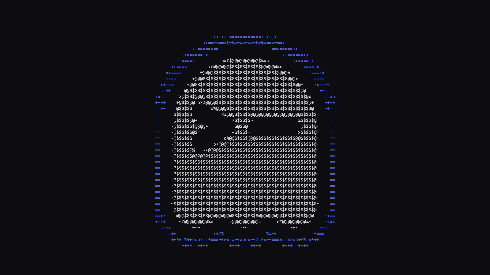
727 分。Ghostty 终端模拟器发布 1.4 版本。
核心更新：
- Ghostty 是由 HashiCorp 联合创始人 Mitchell Hashimoto 创建的现代终端；
- 使用 GPU 加速渲染，启动速度和滚动流畅度远超传统终端；
- 1.4 版本带来多项性能和稳定性改进。
为什么 HN 关注：终端是开发者每天面对的工具，Ghostty 代表了"重新发明轮子"的成功案例。
3️⃣ DeepMind Genie 4：世界模拟新纪元
706 分。Google DeepMind 发布 Genie 4——新一代世界模拟模型。
技术突破：
- 可以从文本/图像描述生成可交互的 3D 世界；
- 物理规律模拟更加逼真；
- 支持长时间序列的一致性生成。
这意味着什么：
- 离"文字生成可玩游戏"又近了一步；
- 对游戏、VR/AR、机器人训练都有深远影响；
- 世界模型正在成为 AI 的下一个前沿方向。
4️⃣ AI 承诺减少工作量，我却从未如此忙碌
614 分。一篇引发广泛共鸣的博客文章：AI 工具承诺帮我们减负，但实际上工作量更大了。
核心论点：
- AI 降低了"开始做"的门槛，但也降低了"做更多"的门槛；
- 老板的期望水涨船高——"AI 都能做了，为什么还没完成？"；
- 审查 AI 输出本身就成了新的工作量。
讨论焦点：
- 这不是技术问题，是组织管理问题；
- 效率工具的悖论：每次效率提升都伴随着工作量的膨胀。
5️⃣ Roblox 从我们的网站下载了 145GB 模型
456 分。Open3DLab 发现：Roblox 未经请求，从他们的网站批量下载了 145GB 的 3D 模型——其中包含成人内容。
争议焦点：
- Roblox 的用户群体大量是未成年人；
- 未经授权的爬虫行为涉及版权和安全双重问题；
- 平台内容审核机制再次受到质疑。
6️⃣ Anthropic 用盗版斯坦福教授书籍训练 Claude
452 分。斯坦福校报报道：教授的书籍被非法获取并用于训练 Claude AI 模型。
核心争议：
- 版权法 vs AI 训练的"合理使用"边界；
- 学术界对 AI 公司数据获取方式的不满加剧；
- 可能引发更多法律诉讼。
背景：AI 训练数据的版权问题正在从灰色地带走向法律正面冲突。
7️⃣ 维基百科的 AI 生成内容大清理

443 分。IEEE Spectrum 报道：维基百科正在发起 WikiProject AI Cleanup——系统性清理 AI 生成的内容。
清理范围：
- AI 生成的事实性错误；
- 机器翻译痕迹明显的段落；
- 缺乏可靠来源的"AI 填充"内容。
这意味着什么：
- AI 内容污染已经从理论风险变成现实问题；
- 知识维护的成本正在被 AI 外部化；
- 人工审核在 AI 时代反而更加重要。
8️⃣ Python 实验性 JIT 编译器将被移除
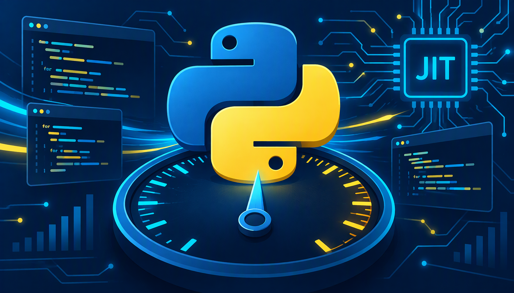
440 分。LWN 报道：Python 核心开发者决定移除实验性的 JIT 编译器。
技术背景：
- 这个 JIT 是 Python 3.13 引入的实验性功能；
- 基于 copy-and-patch 技术，由 Brandt Bucher 主导开发；
- 实际性能提升有限，维护成本却很高。
讨论焦点：
- Python 的性能优化方向是否需要重新审视；
- "实验性功能"的准入标准是否需要更严格；
- 对 Python 生态的长期影响。
9️⃣ 警察正在用 AI 拦截"可疑行为"的司机
336 分。Gizmodo 报道：美国多地警方正在使用 AI 系统分析交通摄像头画面，以"可疑行为"为由拦截司机。
争议焦点：
- "可疑行为"的定义由 AI 决定，缺乏透明度；
- 可能存在算法偏见——某些社区被过度监控；
- 无证拦截的法律合宪性受到挑战。
🔟 Apple 发布搭载 M6 芯片的新 iMac
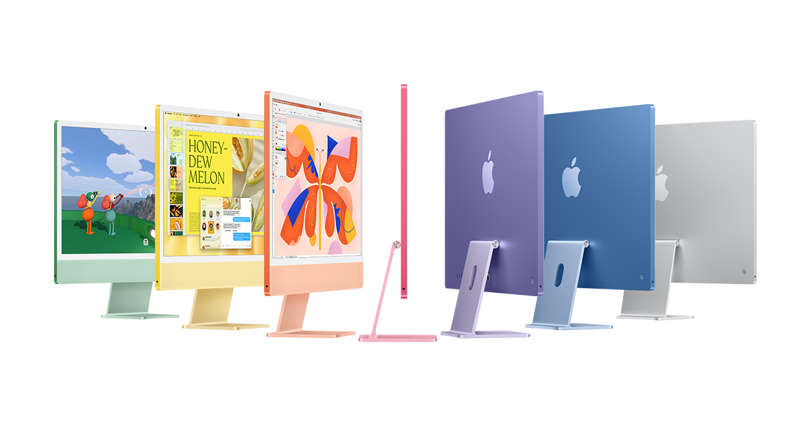
306 分。Apple 发布搭载 M6 芯片的新款 iMac。
关键升级：
- M6 芯片采用更先进的制程工艺；
- AI 推理性能大幅提升（Neural Engine 升级）；
- 外观设计基本不变，重点在性能。
HN 讨论焦点：
- Apple Silicon 的迭代速度令人印象深刻；
- 对创意工作者来说，性能已经"过剩"；
- 价格依然是最大的吐槽点。
数据来源：Hacker News (Algolia API) + GitHub Trending | 由 AI 辅助整理